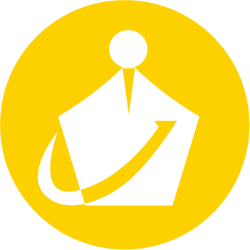

LOGO
三角函數
觀察三角函數圖形：平移、伸縮及疊合
↺ 重置
顯示函數（可複選）
sin
cos
tan
圖形模式
一般
絕對值 |
f
(
x
)|
正餘弦疊合
sin 參數
a
上下伸縮
b
左右伸縮
c
左右平移
d
上下平移
cos 參數
a
上下伸縮
b
左右伸縮
c
左右平移
d
上下平移
tan 參數
a
上下伸縮
b
左右伸縮
c
左右平移
d
上下平移
正餘弦疊合參數
設
y
=
p
·sin
x
+
q
·cos
x
，調整係數：
p
sin 係數
q
cos 係數
☰
方程式與設定
✕